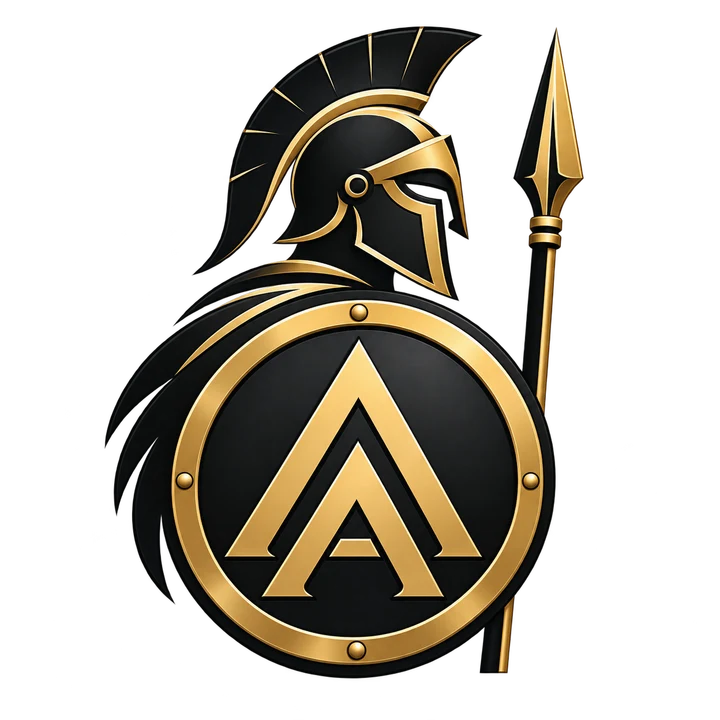

Iniciatyva
Imtis užduoties, priimti sprendimą ir atsakyti už rezultatą.
 ASTRA ACADEMY
ASTRA ACADEMY
ŽYGIAI · ĮGŪDŽIAI · STRATEGIJA
Astra Academy — vyrams, kurie nori daugiau iš savęs ir savo laiko. Žygiuojame, mokomės praktinių įgūdžių, sprendžiame užduotis ir kalbamės apie tai, kas svarbu.
Vilnius ir apylinkės · Seminarai internetu

ASTRA ACADEMY
01 — APIE MUS
Išeiti į žygį. Išmokti orientuotis. Priimti sprendimą, kai trūksta informacijos. Astra suburia vyrus, kuriems įdomu išbandyti save ir mokytis kartu. Čia gali ateiti vienas — pažintys prasideda nuo bendros veiklos.
Imtis užduoties, priimti sprendimą ir atsakyti už rezultatą.
Pažinti savo ribas ir išlaikyti ramybę, kai pavargsti ar planas pasikeičia.
Aiškiau matyti pasirinkimus, numatyti pasekmes ir sutelkti jėgas ten, kur jos svarbiausios.
Rasti žmonių žygiui, bendram sumanymui ir atviram pokalbiui.
02 — VEIKLOS
Kelios valandos gamtoje, naujas įgūdis ar vakaras prie strategijos stalo. Rinkis tai, kas tau įdomu.
3–5 VALANDOS · GAMTOJE
Žygis su praktine užduotimi: orientavimasis, komandinis darbas ar lauko įgūdžiai. Pabaigoje — laikas aptarti patirtį ir pabendrauti.
90–120 MINUČIŲ · GYVAI
Derybos, lyderystė, strategija ir komunikacija. Konkreti tema, praktinės užduotys ir idėjos, kurias gali pritaikyti savo gyvenime.
INTERNETU
Prisijunk iš ten, kur esi. Susipažink su Astra, užduok klausimus ir įsitrauk į pokalbį.
DAUGIAU LAIKO KARTU
Daugiau gamtos, lauko gyvenimo ir bendrų iššūkių. Proga atsitraukti nuo kasdienio tempo ir geriau pažinti save bei kitus.
03 — RENGINIAI
Išsirink renginį ir parašyk mums. Atsiųsime datą, vietą ir dalyvavimo informaciją.
04 — BENDRUOMENĖ
Bendras žygis greitai duoda apie ką kalbėtis. O iš pažinčių gali išaugti draugystė, nauji sumanymai ir kitas susitikimas.
Ateik į vieną renginį. Susipažink su žmonėmis ir pats pajusk, ar Astra — tavo vieta.
Pradėk nuo renginio05 — PRISIJUNK
Parašyk, kuri veikla tave domina. Atsiųsime artimiausio renginio informaciją ir atsakysime į tavo klausimus.